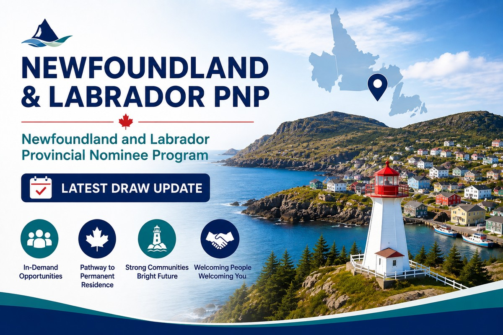

纽芬兰与拉布拉多省于2026年8月26日进行了新一轮 经济移民邀请，共发出140份 Invitation to Apply（ITA）。
- Newfoundland and Labrador Provincial Nominee Program （NLPNP）：94份
- Atlantic Immigration Program（AIP）：46份
这是8月份第三轮邀请
值得注意的是，这是纽芬兰与拉布拉多省 2026年8月份进行的第三轮经济移民邀请。
8月10日，该省发出208份邀请， 其中186份属于NLPNP， 22份属于Atlantic Immigration Program。
8月18日，该省再次发出122份邀请， 全部属于NLPNP。
到了8月26日， AIP再次获得46个邀请名额。
今年抽选节奏明显加快
纽芬兰与拉布拉多省自2025年开始采用 Expression of Interest（EOI） 模式管理经济类移民申请。
进入2026年后， 该省持续通过批次方式发出邀请， 仅8月份就已经进行了三轮。
不能只看“多少分可以被邀请”
与Express Entry等打分制项目不同， 纽芬兰与拉布拉多省公布的抽选结果 并没有提供最低EOI分数， 也没有公布完整的获邀职业名单。
因此，申请人不能简单通过 “多少分可以被邀请” 来判断自己的机会。
更重要的是申请人的职业、 当地就业情况、雇主， 以及申请是否符合该省当前的 劳动力市场优先方向。
NLPNP和AIP值得同时评估
对于已经获得纽芬兰与拉布拉多省 雇主Job Offer的外国工人来说， NLPNP和Atlantic Immigration Program 可能都值得进行评估。
在制定永久居民申请策略时， 不应只关注其中一个项目， 而应结合申请人的职位、 雇主、工作经验及具体资格， 比较两种途径是否存在适用机会。
Read in English ↓Newfoundland and Labrador Issues 140 Immigration Invitations in Latest Draw
Newfoundland and Labrador conducted another economic immigration selection round on August 26, 2026, issuing a total of 140 Invitations to Apply (ITAs).
- Newfoundland and Labrador Provincial Nominee Program (NLPNP): 94
- Atlantic Immigration Program (AIP): 46
Third Invitation Round in August
This was already the province’s third invitation round in August.
On August 10, the province issued 208 invitations, including 186 under the NLPNP and 22 under the AIP.
Another 122 NLPNP invitations were issued on August 18.
The August 26 round brought the AIP back into the province’s latest selection, with 46 AIP invitations issued.
Newfoundland and Labrador Continues Frequent Selections
Newfoundland and Labrador introduced an Expression of Interest (EOI) model for its economic immigration programs in 2025.
The province has continued to issue invitations in batches throughout 2026, with three selection rounds taking place in August alone.
There Is No Published EOI Cut-Off Score
Unlike some points-based immigration programs, Newfoundland and Labrador does not publish a minimum EOI score or a complete list of occupations selected in each round.
Applicants therefore should not assess their chances based on a single expected “cut-off score.”
Occupation, employment in the province, the employer and alignment with Newfoundland and Labrador’s current labour market priorities can all affect an applicant’s prospects.
NLPNP and AIP May Both Be Worth Assessing
For foreign workers who already have a job offer from a Newfoundland and Labrador employer, both the NLPNP and the Atlantic Immigration Program may be worth assessing when developing an immigration strategy.